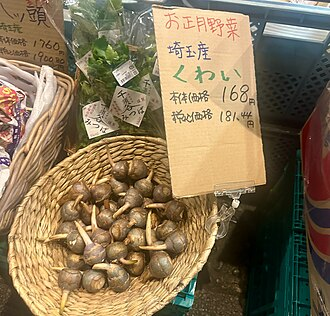

くわい（慈姑）の生産量 都道府県ランキング
全6県の順位と、とれた量
くわいが日本でいちばん多くとれるのは広島県です。79 tで、全国（112 t）の71%を占めます。

| 順位 | 都道府県 | 収穫量 | 全国に占める割合 |
|---|---|---|---|
| 1位 | 広島県 | 79 t | 71% |
| 2位 | 埼玉県 | 11 t | 9.8% |
| 3位 | 茨城県 | 8 t | 7.1% |
| 4位 | 大阪府 | 8 t | 7.1% |
| 5位 | 石川県 | 4 t | 3.6% |
| 6位 | 宮崎県 | 1 t | 0.9% |
この数字について
- 分類：オモダカ科
- 全国の収穫量：112 t
- この数字が表すもの：収穫量（畑や田でとれた重さ）
- 調査：地域特産野菜生産状況調査 令和6年産
- 6県分を調査（調査していない県は順位に入りません）
くわいの生産量について、よくある質問
- くわいの生産量が日本一の都道府県はどこですか？
- 広島県です。地域特産野菜生産状況調査（令和6年産）で79 tでした。
- くわいの生産量ランキング2位・3位はどこですか？
- 2位は埼玉県（11 t）、3位は茨城県（8 t）です。
- くわいの生産量ランキング4位・5位はどこですか？
- 4位は大阪府（8 t）、5位は石川県（4 t）です。くわいの全6県の順位は上の表のとおりです。
- くわいの全国の生産量はどれくらいですか？
- 112 t（令和6年産）です。